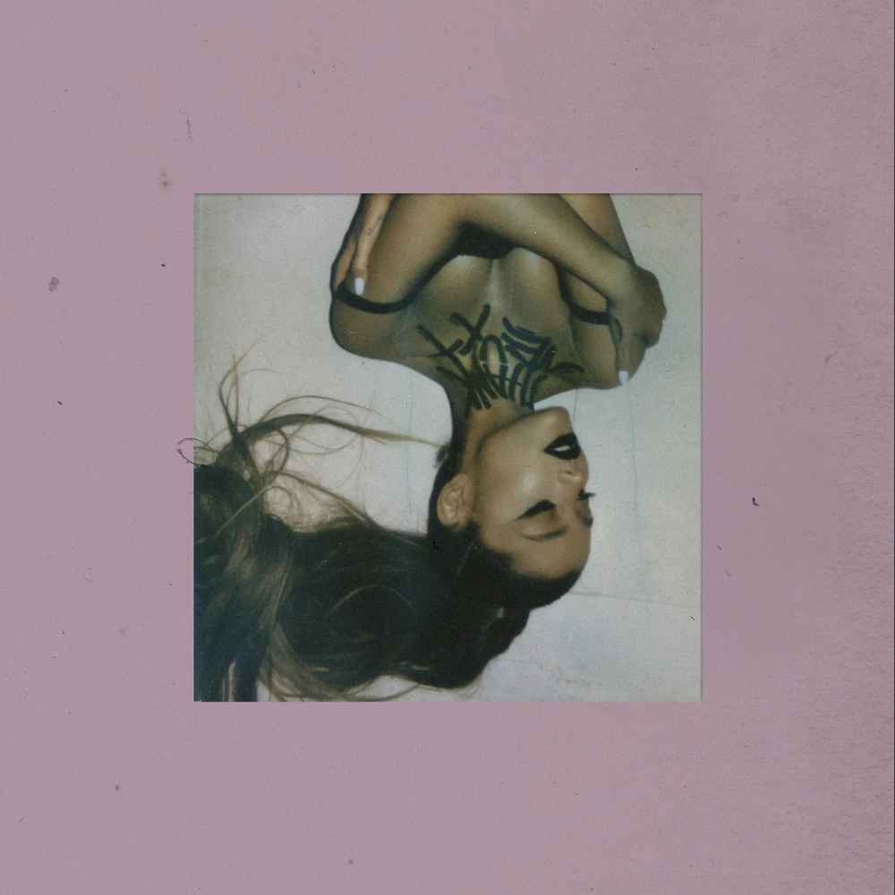
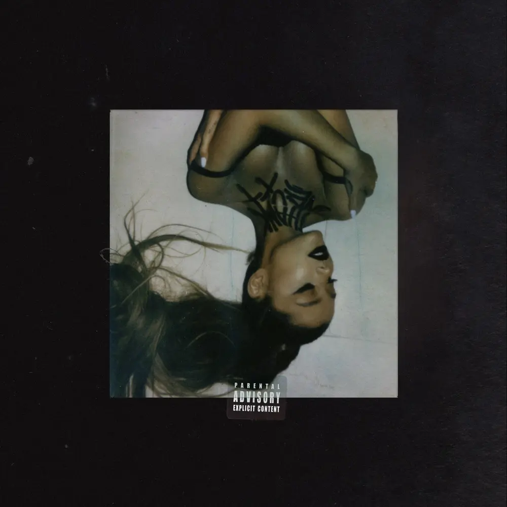
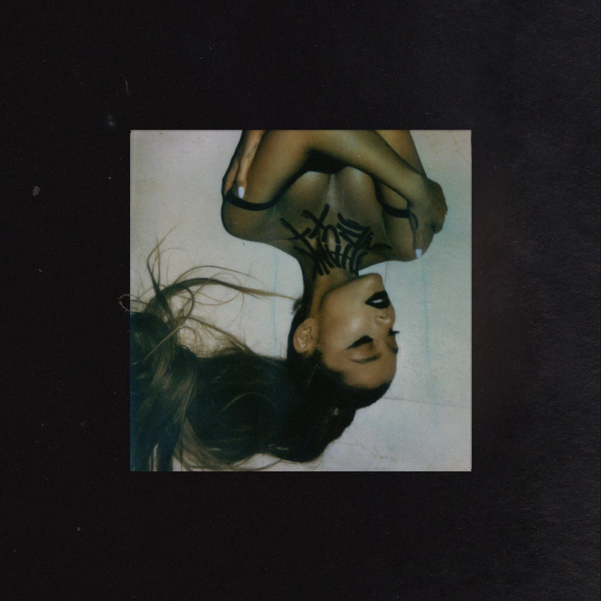
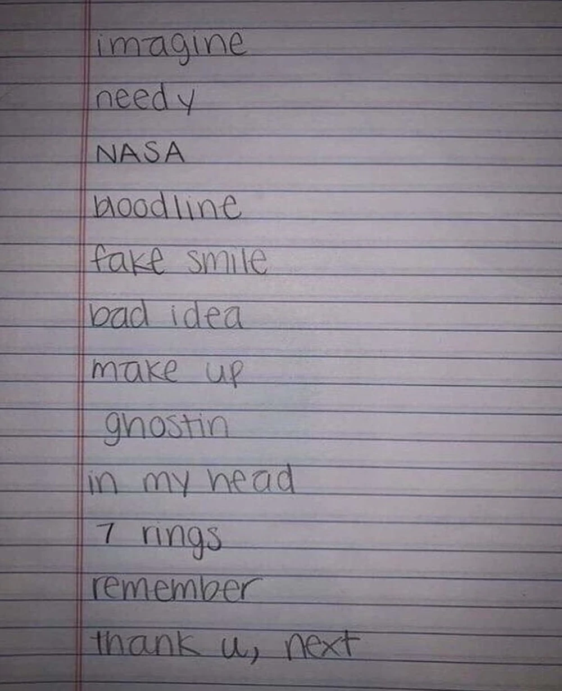
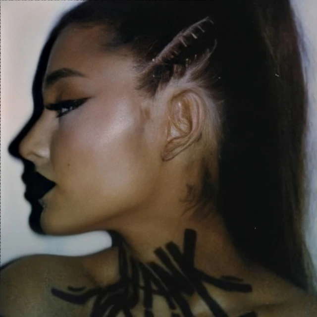
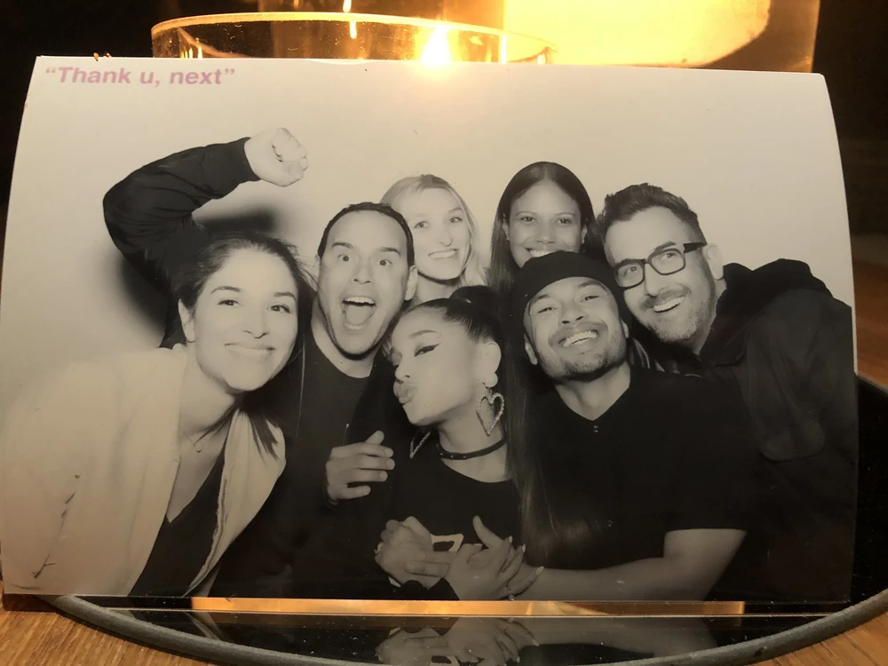

About ⋆ . ˚



Thank U, Next (stylized all in lowercase; commonly abbreviated as TUN) is Ariana Grande's fifth studio album. It was released on February 8, 2019, through Republic Records. The album was recorded between September and December 2018.
Three singles were released from the album, two of which debuted at number one on the US Billboard Hot 100. With this, Thank U, Next joined Daydream by Mariah Carey as the only albums by female artists to have multiple songs debut at number one. Grande also joined Carey and Britney Spears as the only female artists with multiple number-one debuts; overall she is the fifth artist after Justin Bieber and Drake.
Topping charts in many countries internationally, the album broke numerous streaming records, including the record for the most streams received by a song in a single day for a female artist on Spotify, as well as the largest on-demand streaming week ever recorded for a female artist in the US.
Background ⋆ . ˚
During the Sweetener livestream on August 16, 2018, Grande confirmed that she would start working on her next album in September 2018. Tommy Brown shared a short snippet of a song on his Instagram story on October 4, 2018. Later that day, Grande shared a 45-second-snippet of a song on her Instagram with the caption "tell me how good it feels to be needed" which are lyrics from a song, later revealed to be titled "Needy". On November 1, 2018, Grande revealed on Twitter that she was finishing the album, but she later deleted the tweet. On November 3, 2018, Grande confirmed the title of the album, Thank U, Next.

A music video for Grande's single "Breathin", from her previous album Sweetener, was released on November 7, 2018. In the video, a short scene shows a departures board, where some possible tracks from Thank U, Next are listed, including "NASA", "Imagine" and "Needy". Also, another short scene shows the board in the background blurred. The song titles "Make Up", "7 Rings", "Ghostin" and "Remember" could be seen. Grande also teased "Imagine", "7 Rings" and "Needy" in the music video for the album's title track, "Thank U, Next", released in November 2018.
On December 4, 2018, Grande revealed on Twitter that the album was finished. In an interview with Billboard, the album was described as "deep, bass-driven bangers with trap beats alternating with airy, sad ballads". On January 3, 2019, Grande confirmed on Twitter that "7 Rings" would be the second single from the album. Its track listing was revealed on January 22, 2019 on Instagram. The album was made available for pre-order on January 25, 2019.

It was revealed on Grande's official Japanese Twitter account that a Deluxe Edition of the album would be released on June 26, Ariana's birthday, featuring the "7 Rings" remix featuring 2 Chainz, "Monopoly" with Victoria Monét, and a DVD with the music videos for "Thank U, Next", "7 Rings" and "Break Up With Your Girlfriend, I'm Bored". It is rumored that there was supposed to be a more fleshed-out deluxe, however it was eventually scrapped in favor of releasing K Bye For Now (SWT Live), a live album for the corresponding tour, along with featuring on the Charlie's Angels soundtrack.
Grande revealed that there would be a different version for the physical and digital album cover art. The digital version of the cover was revealed on January 23, 2019 and Grande stated that this was her favorite one yet. It features a pink background and an upside down photo of Grande in the middle, shot by Alfredo Flores, with the title of the album painted on her neck by Brian Nicholson. While the physical version, revealed two days later, features a black background. The dress worn in the album cover is also worn in the very first shot of "Break Up With Your Girlfriend, I'm Bored".

On October 1, 2018, Grande uploaded a photo at studio on her Instagram story. A day later, she uploaded more photos and revealed that at least nine songs were recorded, tagging songwriters and producers such as Kaydence, Victoria Monét, Tayla Parx, Tommy Brown, Charles Anderson (Scootie), and Mikey (from Social House). Tracking for vocals used high-end tube condensers familiar from Ariana's Sweetener sessions, with initial takes captured on a Neumann M 149 tube mic, before the team pivoted to a Telefunken ELA M 251 for some primary lead vocal recordings after finding "its tonal character more suited to Grande's voice", particularly those engineered by Billy Hickey.
Grande also confirmed that the tour for her album Sweetener would be combined with the tour for Thank U, Next. The dates for the North American leg of the Sweetener World Tour were announced on October 25, 2018. The tour began on March 18, 2019, in Albany, New York and ended on December 22, 2019, in Inglewood, California.
Commercial Performance & Critical Reception ⋆ . ˚
The album received universal acclaim from music critics. AllMusic editor Stephen Thomas Erlewine made an early review of the album. He noted the difference between Thank U, Next with Grande's previous album Sweetener saying that "this time Grande is swaggering with the confidence that comes with unquestioned stardom." He added that "the album feels slighter than Sweetener." Erlewine gave the album 4.5 out of 5 stars. Sal Cinquemani, writing on behalf of Slant Magazine, gave the album 3.5 out of 5 stars and stated that Thank U, Next is "easily Grande's most sonically consistent effort to date, even if that means some of the album's sleek R&B tracks tend to blur together."

After the release of Thank U, Next, it reached the top on US iTunes in just 5 minutes, becoming the fastest album in history to hit #1 on US iTunes.
The album debuted at number 1 on the US Billboard 200 with 360,000 album-equivalent units being Grande's fourth number-one album in the United States. It broke the record for the largest streaming week for a pop album. All twelve songs from the album appeared simultaneously on the Billboard Hot 100 in the week ending February 23, 2019, and eleven of the tracks appeared in the top 40 of the chart. With this, Grande broke the record for the most simultaneous top 40 songs by a female artist.
The album also broke yet another record of occupying the top three spots on the Billboard Hot 100 Singles chart, a record that was held by The Beatles for the last 55 years.
Album Details ⋆ . ˚
2. needy
3. NASA
4. bloodline
5. fake smile
6. bad idea
7. make-up
8. ghostin
9. in my head
10. 7 rings
11. thank u, next
12. break up with your girlfriend, i'm bored
Single: 7 rings
Single: break up with your girlfriend, i'm bored
Promotional Single: imagine
nothing here . . .
Sources ⋆ . ˚
Navigation Bar - Black & White Flower Image - Source: https://png.pngtree.com/png-vector/20240312/ourmid/pngtree-black-and-white-cute-flower-png-image_11935120.png
About - thank u, next Official Album Cover Image - Source: https://arianagrande.fandom.com/wiki/Thank_U,_Next?file=Thank+U%2C+Next+-+Digital+Version.jpg
About - thank u, next Official Digital Clean Album Cover Image - Source: https://images-na.ssl-images-amazon.com/images/I/81-EIBpsVgL._SL1500_.jpg
About - thank u, next Official Physical Explicit Album Cover Image - Source: https://arianagrande.fandom.com/wiki/Thank_U,_Next?file=Thank+U%2C+Next+-+Explicit+Physical.webp
About - thank u, next Official Physical Clean Album Cover Image - Source: https://arianagrande.fandom.com/wiki/Thank_U,_Next?file=Thank+U%2C+Next+-+Physical+Version.jpg
Background - thank u, next Early Tracklist Image - Source: https://arianagrande.fandom.com/wiki/Thank_U,_Next?file=Early_TUN_List.jpeg
Background - Ariana in thank u, next Photoshoot Image - Source: https://arianagrande.fandom.com/wiki/Thank_U,_Next?file=Tun-photoshoot-3.jpg
Background - Photobooth at the thank u, next Launch Party Image - Source: https://arianagrande.fandom.com/wiki/Thank_U,_Next?file=February_8%2C_2019_-_Photo_booth_at_TUN_Launch_Party_%281%29.jpg
Commercial Performance and Critical Reception - Ariana in the Music Video for "7 Rings" Image - Source: https://www.billboard.com/wp-content/uploads/media/01-ariana-grande-7-rings-2019-billboard-1548.jpg
font "Karrilee" obtained from svg icons is licensed by CC BY 4.0
ALL OF THE WRITTEN MATERIAL ABOVE WERE COMPLETELY SOURCED AND TAKEN FROM THE OFFICIAL ARIANA GRANDE FANDOM WITH MINOR MODIFICATIONS. THE LINK TO THE WIKI IS HERE: https://arianagrande.fandom.com/wiki/Ariana_Grande